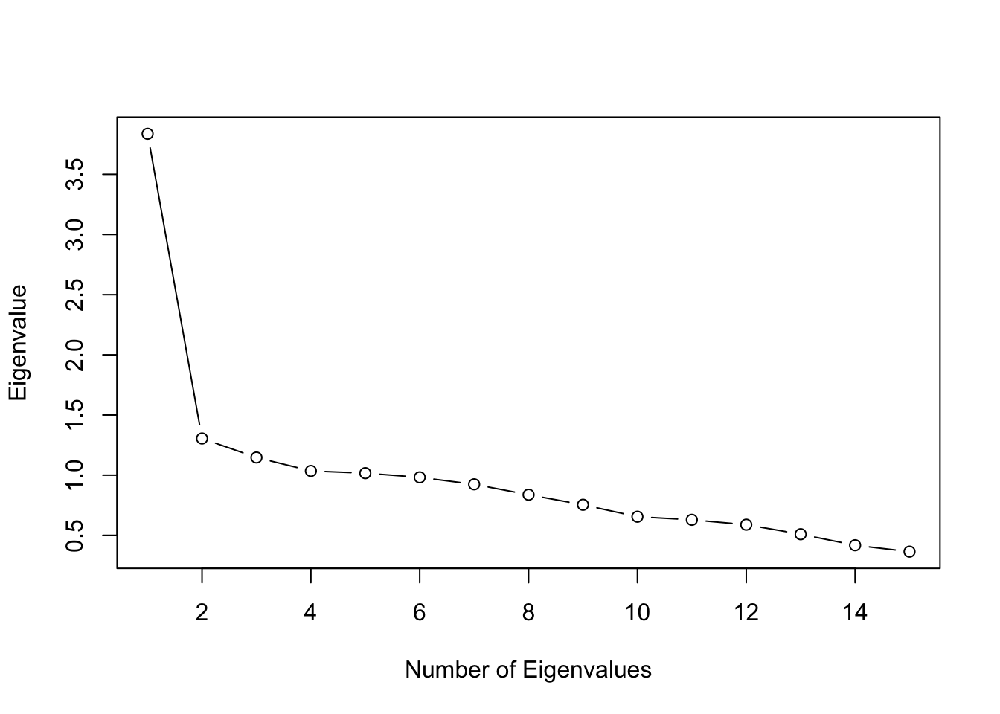

dat <- J15S5003 記述統計・項目分析・CTT
この章では，テストデータの記述統計，項目分析，古典的テスト理論（CTT）に関する関数を紹介します。サンプルデータJ15S500（15項目・500人の二値データ）を使用します。
3.1 スコアリング関数
3.1.1 正答数（Number Right Score）
nrs(dat) |> head(10) [,1]
[1,] 8
[2,] 10
[3,] 10
[4,] 11
[5,] 6
[6,] 12
[7,] 9
[8,] 10
[9,] 14
[10,] 93.1.2 標準化スコア
sscore(dat) |> head(10) [,1]
[1,] -0.6249599
[2,] 0.1261938
[3,] 0.1261938
[4,] 0.5017707
[5,] -1.3761137
[6,] 0.8773476
[7,] -0.2493831
[8,] 0.1261938
[9,] 1.6285014
[10,] -0.24938313.1.3 スタナイン
stanine(dat)$stanine
4% 11% 23% 40% 60% 77% 89% 96%
5 6 7 9 11 12 13 14
$stanineScore
[1] 4 5 5 6 3 7 5 5 9 5 5 4 8 7 2 2 7 4 7 3 8 4 5 5 5 2 5 6 6 1 2 6 2 2 9 4 7
[38] 6 4 5 6 9 5 5 7 6 5 7 6 8 6 7 5 6 8 7 5 6 9 7 9 6 5 6 5 2 4 3 7 3 2 5 5 5
[75] 7 4 8 7 7 1 5 2 4 4 7 4 6 4 7 6 4 3 4 7 4 6 5 3 6 7 5 3 8 2 6 4 6 6 3 7 7
[112] 6 3 4 2 8 6 4 4 4 5 4 7 8 5 8 1 6 7 7 5 5 6 2 4 2 8 6 6 5 6 2 8 1 7 4 2 7
[149] 5 8 8 6 9 5 3 6 5 8 8 9 6 4 4 2 5 2 5 4 9 3 3 8 5 7 4 5 6 4 5 4 4 3 6 4 6
[186] 6 4 6 5 5 5 4 5 3 1 7 6 8 5 6 7 6 2 7 5 4 7 6 5 6 5 9 5 4 5 5 8 7 1 3 2 6
[223] 5 5 5 5 5 6 4 5 4 1 7 1 5 5 4 9 7 6 7 6 5 4 6 2 6 9 4 9 5 4 6 5 6 5 4 4 4
[260] 5 4 8 7 4 7 6 6 4 7 4 7 5 3 5 5 6 4 3 5 4 5 7 4 7 5 3 8 5 8 9 5 9 1 7 3 4
[297] 6 7 2 6 4 8 5 5 5 7 3 7 6 5 5 6 7 4 6 6 8 4 3 5 5 8 5 8 8 8 4 5 6 5 7 4 5
[334] 8 6 5 5 7 8 5 1 5 5 9 4 6 5 7 5 7 5 4 6 4 7 8 4 9 1 5 7 8 4 6 5 6 9 3 5 5
[371] 9 6 8 5 5 5 5 5 9 7 1 4 4 4 7 4 4 4 7 5 3 4 6 4 6 4 6 7 3 2 8 4 5 7 5 5 1
[408] 6 5 7 7 5 5 5 5 9 5 8 3 5 5 4 5 8 5 5 8 2 6 6 5 7 6 8 5 9 6 5 4 6 6 5 6 6
[445] 4 3 9 7 5 8 5 8 4 7 8 1 8 6 5 3 4 4 3 1 5 8 7 8 2 3 2 3 5 3 7 5 6 9 4 7 4
[482] 8 5 6 9 8 6 6 6 5 3 7 5 5 4 3 4 4 5 4
Levels: 1 2 3 4 5 6 7 8 93.1.4 正答率（Correct Response Rate）
crr(dat) |> head(10) [,1]
Item01 0.746
Item02 0.754
Item03 0.726
Item04 0.776
Item05 0.804
Item06 0.864
Item07 0.716
Item08 0.588
Item09 0.364
Item10 0.6623.1.5 通過率（Passage Rate）
passage(dat) |> head(10) [,1]
[1,] 0.5333333
[2,] 0.6666667
[3,] 0.6666667
[4,] 0.7333333
[5,] 0.4000000
[6,] 0.8000000
[7,] 0.6000000
[8,] 0.6666667
[9,] 0.9333333
[10,] 0.60000003.1.6 パーセンタイル
percentile(dat) |> head(10) [1] 32 57 57 74 15 87 42 57 99 423.2 項目統計量
3.2.1 ItemStatistics
項目ごとの統計量（通過率，点双列相関等）をまとめて算出します。
ItemStatistics(dat)Item Statistics
ItemLabel NR CRR ODDs Threshold Entropy ITCrr
1 Item01 500 0.746 2.937 -0.662 0.818 0.375
2 Item02 500 0.754 3.065 -0.687 0.805 0.393
3 Item03 500 0.726 2.650 -0.601 0.847 0.321
4 Item04 500 0.776 3.464 -0.759 0.767 0.503
5 Item05 500 0.804 4.102 -0.856 0.714 0.329
6 Item06 500 0.864 6.353 -1.098 0.574 0.377
7 Item07 500 0.716 2.521 -0.571 0.861 0.483
8 Item08 500 0.588 1.427 -0.222 0.978 0.405
9 Item09 500 0.364 0.572 0.348 0.946 0.225
10 Item10 500 0.662 1.959 -0.418 0.923 0.314
11 Item11 500 0.286 0.401 0.565 0.863 0.455
12 Item12 500 0.274 0.377 0.601 0.847 0.468
13 Item13 500 0.634 1.732 -0.342 0.948 0.471
14 Item14 500 0.764 3.237 -0.719 0.788 0.485
15 Item15 500 0.706 2.401 -0.542 0.874 0.4133.2.2 StudentAnalysis
StudentAnalysis(dat) |> head(10) ID NR NRS PR SS Percentile Stanine
1 Student001 15 8 0.5333333 -0.6249599 32 4
2 Student002 15 10 0.6666667 0.1261938 57 5
3 Student003 15 10 0.6666667 0.1261938 57 5
4 Student004 15 11 0.7333333 0.5017707 74 6
5 Student005 15 6 0.4000000 -1.3761137 15 3
6 Student006 15 12 0.8000000 0.8773476 87 7
7 Student007 15 9 0.6000000 -0.2493831 42 5
8 Student008 15 10 0.6666667 0.1261938 57 5
9 Student009 15 14 0.9333333 1.6285014 99 9
10 Student010 15 9 0.6000000 -0.2493831 42 53.3 項目間分析
3.3.1 InterItemAnalysis
項目間の関連指標をまとめて算出します。
IIA <- InterItemAnalysis(dat)3.3.1.1 同時正答率（Joint Correct Response Rate）
IIA$JCRR Item01 Item02 Item03 Item04 Item05 Item06 Item07 Item08 Item09 Item10
Item01 0.746 0.576 0.542 0.592 0.624 0.664 0.548 0.466 0.284 0.502
Item02 0.576 0.754 0.566 0.620 0.620 0.668 0.560 0.460 0.274 0.510
Item03 0.542 0.566 0.726 0.590 0.598 0.642 0.548 0.438 0.264 0.490
Item04 0.592 0.620 0.590 0.776 0.640 0.690 0.604 0.484 0.286 0.526
Item05 0.624 0.620 0.598 0.640 0.804 0.702 0.594 0.482 0.284 0.542
Item06 0.664 0.668 0.642 0.690 0.702 0.864 0.644 0.534 0.310 0.584
Item07 0.548 0.560 0.548 0.604 0.594 0.644 0.716 0.456 0.270 0.500
Item08 0.466 0.460 0.438 0.484 0.482 0.534 0.456 0.588 0.210 0.396
Item09 0.284 0.274 0.264 0.286 0.284 0.310 0.270 0.210 0.364 0.226
Item10 0.502 0.510 0.490 0.526 0.542 0.584 0.500 0.396 0.226 0.662
Item11 0.238 0.244 0.220 0.254 0.244 0.256 0.238 0.206 0.112 0.208
Item12 0.224 0.230 0.212 0.254 0.234 0.248 0.230 0.188 0.132 0.190
Item13 0.496 0.498 0.482 0.532 0.538 0.564 0.484 0.404 0.242 0.446
Item14 0.596 0.604 0.560 0.624 0.632 0.686 0.572 0.470 0.294 0.534
Item15 0.546 0.554 0.520 0.586 0.580 0.638 0.536 0.432 0.254 0.478
Item11 Item12 Item13 Item14 Item15
Item01 0.238 0.224 0.496 0.596 0.546
Item02 0.244 0.230 0.498 0.604 0.554
Item03 0.220 0.212 0.482 0.560 0.520
Item04 0.254 0.254 0.532 0.624 0.586
Item05 0.244 0.234 0.538 0.632 0.580
Item06 0.256 0.248 0.564 0.686 0.638
Item07 0.238 0.230 0.484 0.572 0.536
Item08 0.206 0.188 0.404 0.470 0.432
Item09 0.112 0.132 0.242 0.294 0.254
Item10 0.208 0.190 0.446 0.534 0.478
Item11 0.286 0.126 0.198 0.260 0.222
Item12 0.126 0.274 0.202 0.244 0.216
Item13 0.198 0.202 0.634 0.524 0.488
Item14 0.260 0.244 0.524 0.764 0.568
Item15 0.222 0.216 0.488 0.568 0.7063.3.1.2 条件付き正答率（Conditional Correct Response Rate）
IIA$CCRR Item01 Item02 Item03 Item04 Item05 Item06 Item07 Item08 Item09 Item10
Item01 1.000 0.772 0.727 0.794 0.836 0.890 0.735 0.625 0.381 0.673
Item02 0.764 1.000 0.751 0.822 0.822 0.886 0.743 0.610 0.363 0.676
Item03 0.747 0.780 1.000 0.813 0.824 0.884 0.755 0.603 0.364 0.675
Item04 0.763 0.799 0.760 1.000 0.825 0.889 0.778 0.624 0.369 0.678
Item05 0.776 0.771 0.744 0.796 1.000 0.873 0.739 0.600 0.353 0.674
Item06 0.769 0.773 0.743 0.799 0.812 1.000 0.745 0.618 0.359 0.676
Item07 0.765 0.782 0.765 0.844 0.830 0.899 1.000 0.637 0.377 0.698
Item08 0.793 0.782 0.745 0.823 0.820 0.908 0.776 1.000 0.357 0.673
Item09 0.780 0.753 0.725 0.786 0.780 0.852 0.742 0.577 1.000 0.621
Item10 0.758 0.770 0.740 0.795 0.819 0.882 0.755 0.598 0.341 1.000
Item11 0.832 0.853 0.769 0.888 0.853 0.895 0.832 0.720 0.392 0.727
Item12 0.818 0.839 0.774 0.927 0.854 0.905 0.839 0.686 0.482 0.693
Item13 0.782 0.785 0.760 0.839 0.849 0.890 0.763 0.637 0.382 0.703
Item14 0.780 0.791 0.733 0.817 0.827 0.898 0.749 0.615 0.385 0.699
Item15 0.773 0.785 0.737 0.830 0.822 0.904 0.759 0.612 0.360 0.677
Item11 Item12 Item13 Item14 Item15
Item01 0.319 0.300 0.665 0.799 0.732
Item02 0.324 0.305 0.660 0.801 0.735
Item03 0.303 0.292 0.664 0.771 0.716
Item04 0.327 0.327 0.686 0.804 0.755
Item05 0.303 0.291 0.669 0.786 0.721
Item06 0.296 0.287 0.653 0.794 0.738
Item07 0.332 0.321 0.676 0.799 0.749
Item08 0.350 0.320 0.687 0.799 0.735
Item09 0.308 0.363 0.665 0.808 0.698
Item10 0.314 0.287 0.674 0.807 0.722
Item11 1.000 0.441 0.692 0.909 0.776
Item12 0.460 1.000 0.737 0.891 0.788
Item13 0.312 0.319 1.000 0.826 0.770
Item14 0.340 0.319 0.686 1.000 0.743
Item15 0.314 0.306 0.691 0.805 1.0003.3.1.3 項目リフト（Item Lift）
IIA$IL Item01 Item02 Item03 Item04 Item05 Item06 Item07 Item08 Item09 Item10
Item01 1.34 1.024 1.001 1.02 1.04 1.030 1.03 1.062 1.046 1.016
Item02 1.02 1.326 1.034 1.06 1.02 1.025 1.04 1.038 0.998 1.022
Item03 1.00 1.034 1.377 1.05 1.02 1.023 1.05 1.026 0.999 1.020
Item04 1.02 1.060 1.047 1.29 1.03 1.029 1.09 1.061 1.013 1.024
Item05 1.04 1.023 1.024 1.03 1.24 1.011 1.03 1.020 0.970 1.018
Item06 1.03 1.025 1.023 1.03 1.01 1.157 1.04 1.051 0.986 1.021
Item07 1.03 1.037 1.054 1.09 1.03 1.041 1.40 1.083 1.036 1.055
Item08 1.06 1.038 1.026 1.06 1.02 1.051 1.08 1.701 0.981 1.017
Item09 1.05 0.998 0.999 1.01 0.97 0.986 1.04 0.981 2.747 0.938
Item10 1.02 1.022 1.020 1.02 1.02 1.021 1.05 1.017 0.938 1.511
Item11 1.12 1.131 1.060 1.14 1.06 1.036 1.16 1.225 1.076 1.099
Item12 1.10 1.113 1.066 1.19 1.06 1.048 1.17 1.167 1.323 1.047
Item13 1.05 1.042 1.047 1.08 1.06 1.030 1.07 1.084 1.049 1.063
Item14 1.05 1.049 1.010 1.05 1.03 1.039 1.05 1.046 1.057 1.056
Item15 1.04 1.041 1.015 1.07 1.02 1.046 1.06 1.041 0.988 1.023
Item11 Item12 Item13 Item14 Item15
Item01 1.12 1.10 1.05 1.05 1.037
Item02 1.13 1.11 1.04 1.05 1.041
Item03 1.06 1.07 1.05 1.01 1.015
Item04 1.14 1.19 1.08 1.05 1.070
Item05 1.06 1.06 1.06 1.03 1.022
Item06 1.04 1.05 1.03 1.04 1.046
Item07 1.16 1.17 1.07 1.05 1.060
Item08 1.22 1.17 1.08 1.05 1.041
Item09 1.08 1.32 1.05 1.06 0.988
Item10 1.10 1.05 1.06 1.06 1.023
Item11 3.50 1.61 1.09 1.19 1.099
Item12 1.61 3.65 1.16 1.17 1.117
Item13 1.09 1.16 1.58 1.08 1.090
Item14 1.19 1.17 1.08 1.31 1.053
Item15 1.10 1.12 1.09 1.05 1.4163.3.1.4 相互情報量（Mutual Information）
IIA$MI Item01 Item02 Item03 Item04 Item05 Item06 Item07 Item08
Item01 8.18e-01 3.65e-03 3.12e-06 0.003643 0.01330 0.011319 0.00352 0.011631
Item02 3.65e-03 8.05e-01 6.54e-03 0.025339 0.00450 0.008408 0.00751 0.004412
Item03 3.12e-06 6.54e-03 8.47e-01 0.014072 0.00454 0.006334 0.01368 0.001839
Item04 3.64e-03 2.53e-02 1.41e-02 0.767404 0.00646 0.012223 0.04463 0.012990
Item05 1.33e-02 4.50e-03 4.54e-03 0.006457 0.71386 0.001994 0.00726 0.001604
Item06 1.13e-02 8.41e-03 6.33e-03 0.012223 0.00199 0.573667 0.01797 0.016802
Item07 3.52e-03 7.51e-03 1.37e-02 0.044626 0.00726 0.017970 0.86084 0.017757
Item08 1.16e-02 4.41e-03 1.84e-03 0.012990 0.00160 0.016802 0.01776 0.977539
Item09 2.59e-03 3.49e-06 1.09e-06 0.000225 0.00146 0.000531 0.00136 0.000209
Item10 1.12e-03 2.02e-03 1.41e-03 0.002754 0.00191 0.003855 0.01051 0.000604
Item11 1.20e-02 1.65e-02 2.78e-03 0.023124 0.00463 0.002486 0.02052 0.021517
Item12 7.70e-03 1.14e-02 3.20e-03 0.042072 0.00453 0.004170 0.02200 0.011050
Item13 8.55e-03 6.57e-03 7.26e-03 0.027819 0.01532 0.006766 0.01357 0.012440
Item14 1.36e-02 1.59e-02 5.66e-04 0.020775 0.00756 0.020448 0.01178 0.007050
Item15 6.66e-03 8.53e-03 9.58e-04 0.027525 0.00329 0.021479 0.01540 0.004058
Item09 Item10 Item11 Item12 Item13 Item14 Item15
Item01 2.59e-03 0.001119 0.011986 0.00770 0.00855 0.013613 0.006661
Item02 3.49e-06 0.002021 0.016462 0.01139 0.00657 0.015904 0.008525
Item03 1.09e-06 0.001415 0.002775 0.00320 0.00726 0.000566 0.000958
Item04 2.25e-04 0.002754 0.023124 0.04207 0.02782 0.020775 0.027525
Item05 1.46e-03 0.001914 0.004630 0.00453 0.01532 0.007563 0.003286
Item06 5.31e-04 0.003855 0.002486 0.00417 0.00677 0.020448 0.021479
Item07 1.36e-03 0.010505 0.020521 0.02200 0.01357 0.011781 0.015395
Item08 2.09e-04 0.000604 0.021517 0.01105 0.01244 0.007050 0.004058
Item09 9.46e-01 0.003098 0.000946 0.01598 0.00170 0.004467 0.000133
Item10 3.10e-03 0.922892 0.005627 0.00121 0.00950 0.013835 0.001738
Item11 9.46e-04 0.005627 0.863498 0.03838 0.00430 0.038606 0.007099
Item12 1.60e-02 0.001214 0.038381 0.84715 0.01292 0.027044 0.009269
Item13 1.70e-03 0.009501 0.004301 0.01292 0.94755 0.026346 0.023977
Item14 4.47e-03 0.013835 0.038606 0.02704 0.02635 0.788325 0.015130
Item15 1.33e-04 0.001738 0.007099 0.00927 0.02398 0.015130 0.8738323.3.1.5 ファイ係数（Phi Coefficient）
IIA$Phi Item01 Item02 Item03 Item04 Item05 Item06 Item07 Item08 Item09
Item01 1.00000 0.0721 0.00208 0.0722 0.1401 0.1304 0.0706 0.1277 0.05947
Item02 0.07210 1.0000 0.09681 0.1943 0.0806 0.1121 0.1037 0.0785 -0.00220
Item03 0.00208 0.0968 1.00000 0.1432 0.0807 0.0964 0.1401 0.0506 -0.00123
Item04 0.07220 0.1943 0.14318 1.0000 0.0973 0.1367 0.2574 0.1350 0.01763
Item05 0.14014 0.0806 0.08074 0.0973 1.0000 0.0540 0.1024 0.0473 -0.04532
Item06 0.13039 0.1121 0.09639 0.1367 0.0540 1.0000 0.1642 0.1539 -0.02726
Item07 0.07063 0.1037 0.14013 0.2574 0.1024 0.1642 1.0000 0.1577 0.04321
Item08 0.12766 0.0785 0.05062 0.1350 0.0473 0.1539 0.1577 1.0000 -0.01703
Item09 0.05947 -0.0022 -0.00123 0.0176 -0.0453 -0.0273 0.0432 -0.0170 1.00000
Item10 0.03957 0.0533 0.04450 0.0623 0.0519 0.0742 0.1219 0.0290 -0.06577
Item11 0.12528 0.1457 0.06135 0.1702 0.0784 0.0574 0.1630 0.1701 0.03632
Item12 0.10093 0.1218 0.06573 0.2225 0.0774 0.0737 0.1681 0.1225 0.15035
Item13 0.10986 0.0962 0.10108 0.1992 0.1478 0.0983 0.1384 0.1316 0.04843
Item14 0.14097 0.1528 0.02818 0.1759 0.1053 0.1780 0.1304 0.0994 0.07784
Item15 0.09744 0.1105 0.03663 0.2008 0.0684 0.1794 0.1485 0.0752 -0.01361
Item10 Item11 Item12 Item13 Item14 Item15
Item01 0.0396 0.1253 0.1009 0.1099 0.1410 0.0974
Item02 0.0533 0.1457 0.1218 0.0962 0.1528 0.1105
Item03 0.0445 0.0613 0.0657 0.1011 0.0282 0.0366
Item04 0.0623 0.1702 0.2225 0.1992 0.1759 0.2008
Item05 0.0519 0.0784 0.0774 0.1478 0.1053 0.0684
Item06 0.0742 0.0574 0.0737 0.0983 0.1780 0.1794
Item07 0.1219 0.1630 0.1681 0.1384 0.1304 0.1485
Item08 0.0290 0.1701 0.1225 0.1316 0.0994 0.0752
Item09 -0.0658 0.0363 0.1503 0.0484 0.0778 -0.0136
Item10 1.0000 0.0873 0.0408 0.1154 0.1406 0.0493
Item11 0.0873 1.0000 0.2364 0.0766 0.2163 0.0976
Item12 0.0408 0.2364 1.0000 0.1316 0.1830 0.1110
Item13 0.1154 0.0766 0.1316 1.0000 0.1937 0.1841
Item14 0.1406 0.2163 0.1830 0.1937 1.0000 0.1479
Item15 0.0493 0.0976 0.1110 0.1841 0.1479 1.00003.3.1.6 四分相関係数（Tetrachoric Correlation）
IIA$Tetrachoric Item01 Item02 Item03 Item04 Item05 Item06 Item07 Item08 Item09
Item01 1.00000 0.12990 0.00378 0.1322 0.2540 0.2544 0.1246 0.2149 0.10468
Item02 0.12990 1.00000 0.17081 0.3373 0.1513 0.2219 0.1816 0.1342 -0.00385
Item03 0.00378 0.17081 1.00000 0.2516 0.1493 0.1907 0.2386 0.0852 -0.00211
Item04 0.13217 0.33732 0.25155 1.0000 0.1833 0.2687 0.4291 0.2325 0.03161
Item05 0.25397 0.15131 0.14930 0.1833 1.0000 0.1154 0.1867 0.0852 -0.08231
Item06 0.25443 0.22191 0.19073 0.2687 0.1154 1.0000 0.3121 0.2957 -0.05430
Item07 0.12457 0.18162 0.23858 0.4291 0.1867 0.3121 1.0000 0.2589 0.07417
Item08 0.21492 0.13418 0.08517 0.2325 0.0852 0.2957 0.2589 1.0000 -0.02755
Item09 0.10468 -0.00385 -0.00211 0.0316 -0.0823 -0.0543 0.0742 -0.0276 1.00000
Item10 0.06887 0.09292 0.07633 0.1103 0.0948 0.1460 0.2040 0.0473 -0.10802
Item11 0.23607 0.27919 0.11117 0.3397 0.1552 0.1248 0.3017 0.2887 0.06143
Item12 0.19055 0.23396 0.12039 0.4670 0.1549 0.1640 0.3154 0.2095 0.24969
Item13 0.18651 0.16483 0.16982 0.3373 0.2606 0.1909 0.2292 0.2101 0.07976
Item14 0.24813 0.26860 0.05143 0.3094 0.1961 0.3387 0.2276 0.1705 0.13977
Item15 0.16949 0.19225 0.06418 0.3424 0.1261 0.3381 0.2500 0.1247 -0.02301
Item10 Item11 Item12 Item13 Item14 Item15
Item01 0.0689 0.2361 0.1906 0.1865 0.2481 0.1695
Item02 0.0929 0.2792 0.2340 0.1648 0.2686 0.1922
Item03 0.0763 0.1112 0.1204 0.1698 0.0514 0.0642
Item04 0.1103 0.3397 0.4670 0.3373 0.3094 0.3424
Item05 0.0948 0.1552 0.1549 0.2606 0.1961 0.1261
Item06 0.1460 0.1248 0.1640 0.1909 0.3387 0.3381
Item07 0.2040 0.3017 0.3154 0.2292 0.2276 0.2500
Item08 0.0473 0.2887 0.2095 0.2101 0.1705 0.1247
Item09 -0.1080 0.0614 0.2497 0.0798 0.1398 -0.0230
Item10 1.0000 0.1526 0.0713 0.1878 0.2408 0.0835
Item11 0.1526 1.0000 0.3881 0.1318 0.4345 0.1758
Item12 0.0713 0.3881 1.0000 0.2302 0.3667 0.2028
Item13 0.1878 0.1318 0.2302 1.0000 0.3255 0.2999
Item14 0.2408 0.4345 0.3667 0.3255 1.0000 0.2555
Item15 0.0835 0.1758 0.2028 0.2999 0.2555 1.00003.4 相関係数
3.4.1 項目-合計相関（双列相関）
ITBiserial(dat) [1] 0.4830380 0.4985034 0.4130636 0.6332807 0.4444282 0.5178833 0.5907845
[8] 0.4938693 0.2866633 0.3933372 0.6278208 0.6513541 0.5675060 0.6171171
[15] 0.51045993.4.2 四分相関係数行列
TetrachoricCorrelationMatrixで四分相関係数行列を算出します。
TetrachoricCorrelationMatrix(dat) |> round(3) Item01 Item02 Item03 Item04 Item05 Item06 Item07 Item08 Item09 Item10
Item01 1.000 0.130 0.004 0.132 0.254 0.254 0.125 0.215 0.105 0.069
Item02 0.130 1.000 0.171 0.337 0.151 0.222 0.182 0.134 -0.004 0.093
Item03 0.004 0.171 1.000 0.252 0.149 0.191 0.239 0.085 -0.002 0.076
Item04 0.132 0.337 0.252 1.000 0.183 0.269 0.429 0.232 0.032 0.110
Item05 0.254 0.151 0.149 0.183 1.000 0.115 0.187 0.085 -0.082 0.095
Item06 0.254 0.222 0.191 0.269 0.115 1.000 0.312 0.296 -0.054 0.146
Item07 0.125 0.182 0.239 0.429 0.187 0.312 1.000 0.259 0.074 0.204
Item08 0.215 0.134 0.085 0.232 0.085 0.296 0.259 1.000 -0.028 0.047
Item09 0.105 -0.004 -0.002 0.032 -0.082 -0.054 0.074 -0.028 1.000 -0.108
Item10 0.069 0.093 0.076 0.110 0.095 0.146 0.204 0.047 -0.108 1.000
Item11 0.236 0.279 0.111 0.340 0.155 0.125 0.302 0.289 0.061 0.153
Item12 0.191 0.234 0.120 0.467 0.155 0.164 0.315 0.209 0.250 0.071
Item13 0.187 0.165 0.170 0.337 0.261 0.191 0.229 0.210 0.080 0.188
Item14 0.248 0.269 0.051 0.309 0.196 0.339 0.228 0.170 0.140 0.241
Item15 0.169 0.192 0.064 0.342 0.126 0.338 0.250 0.125 -0.023 0.084
Item11 Item12 Item13 Item14 Item15
Item01 0.236 0.191 0.187 0.248 0.169
Item02 0.279 0.234 0.165 0.269 0.192
Item03 0.111 0.120 0.170 0.051 0.064
Item04 0.340 0.467 0.337 0.309 0.342
Item05 0.155 0.155 0.261 0.196 0.126
Item06 0.125 0.164 0.191 0.339 0.338
Item07 0.302 0.315 0.229 0.228 0.250
Item08 0.289 0.209 0.210 0.170 0.125
Item09 0.061 0.250 0.080 0.140 -0.023
Item10 0.153 0.071 0.188 0.241 0.084
Item11 1.000 0.388 0.132 0.435 0.176
Item12 0.388 1.000 0.230 0.367 0.203
Item13 0.132 0.230 1.000 0.326 0.300
Item14 0.435 0.367 0.326 1.000 0.256
Item15 0.176 0.203 0.300 0.256 1.0003.5 テスト統計量
3.5.1 TestStatistics
テスト全体の統計量（平均点，標準偏差，信頼性等）をまとめて表示します。
TestStatistics(dat)Test Statistics
value
TestLength 15.0000000
SampleSize 500.0000000
Mean 9.6640000
SEofMean 0.1190738
Variance 7.0892826
SD 2.6625707
Skewness -0.4116220
Kurtosis -0.4471624
Min 2.0000000
Max 15.0000000
Range 13.0000000
Q1.25% 8.0000000
Median.50% 10.0000000
Q3.75% 12.0000000
IQR 4.0000000
Stanine.4% 5.0000000
Stanine.11% 6.0000000
Stanine.23% 7.0000000
Stanine.40% 9.0000000
Stanine.60% 11.0000000
Stanine.77% 12.0000000
Stanine.89% 13.0000000
Stanine.96% 14.00000003.5.2 次元性分析
四分相関係数行列の固有値分解により，テストの次元性を検討します。
Dimensionality(dat)Dimensionality Analyeis
Eigenvalues
[1] 3.8366590 1.3048215 1.1469063 1.0349574 1.0165470 0.9819001 0.9238333
[8] 0.8371888 0.7538090 0.6547426 0.6289304 0.5884245 0.5092354 0.4175506
[15] 0.3644943
Percentage Of Variance
[1] 25.577726 8.698810 7.646042 6.899716 6.776980 6.546001 6.158888
[8] 5.581259 5.025393 4.364951 4.192869 3.922830 3.394903 2.783670
[15] 2.429962
Cummurative Percentage
[1] 25.57773 34.27654 41.92258 48.82229 55.59927 62.14527 68.30416
[8] 73.88542 78.91081 83.27577 87.46863 91.39146 94.78637 97.57004
[15] 100.00000
3.6 古典的テスト理論（CTT）
テストの信頼性に関する指標をまとめて算出します。
CTT(dat)Realiability
name value
1 Alpha(Covariance) 0.625
2 Alpha(Phi) 0.630
3 Alpha(Tetrachoric) 0.771
4 Omega(Covariance) 0.632
5 Omega(Phi) 0.637
6 Omega(Tetrachoric) 0.779
Reliability Excluding Item
IfDeleted Alpha.Covariance Alpha.Phi Alpha.Tetrachoric
1 Item01 0.613 0.618 0.762
2 Item02 0.609 0.615 0.759
3 Item03 0.622 0.628 0.770
4 Item04 0.590 0.595 0.742
5 Item05 0.617 0.624 0.766
6 Item06 0.608 0.613 0.754
7 Item07 0.594 0.600 0.748
8 Item08 0.611 0.616 0.762
9 Item09 0.642 0.645 0.785
10 Item10 0.626 0.630 0.773
11 Item11 0.599 0.606 0.751
12 Item12 0.597 0.603 0.748
13 Item13 0.597 0.604 0.753
14 Item14 0.593 0.598 0.745
15 Item15 0.607 0.612 0.7593.6.1 個別の信頼性係数
AlphaCoefficient(dat)$AlphaCov
[1] 0.6251902
$AlphaPhi
[1] 0.6304294
$AlphaTetrachoric
[1] 0.7713707OmegaCoefficient(dat)$OmegaCov
[1] 0.6319023
$OmegaPhi
[1] 0.6368379
$OmegaTetrachoric
[1] 0.77877763.7 多値データの項目分析
多値データでもほぼ同じ関数が使えます。サンプルデータJ5S1000（5項目・1000人の順序データ）を例にします。
dat_poly <- J5S10003.7.1 テスト統計量
TestStatistics(dat_poly)Test Statistics
value
SampleSize 1000.00000000
TestLength 5.00000000
Median 12.00000000
Max 18.00000000
Min 4.00000000
Range 14.00000000
Mean 11.45700000
SD 2.92107578
Skewness -0.08836075
Kurtosis -0.55776379
Alpha 0.594622413.7.2 項目統計量
ItemStatistics(dat_poly)Item Statistics
ItemLabel NR Threshold.1 Threshold.2 Threshold.3 Entropy ITCrr
1 V1 993 -0.805 0.0290 0.805 0.991 0.670
2 V2 990 -0.580 0.6697 NA 0.964 0.635
3 V3 996 -0.832 -0.0403 0.665 0.995 0.675
4 V4 997 -0.638 0.5803 NA 0.970 0.679
5 V5 998 -0.714 0.0126 0.795 0.996 0.6863.7.3 ItemReport / ScoreReport（多値データ専用）
ItemReportとScoreReportは多値データ専用の関数です。
ItemReport(dat_poly)Item Statistics
ItemLabel Obs ObsRatio ItemMean ItemSD ItemCORR ItemCORR_R
1 V1 993 0.993 2.49 1.045 0.632 0.332
2 V2 990 0.990 1.97 0.729 0.575 0.368
3 V3 996 0.996 2.57 1.076 0.633 0.323
4 V4 997 0.997 2.02 0.736 0.615 0.417
5 V5 998 0.998 2.47 1.073 0.643 0.339ScoreReport(dat_poly)Test Statistics
value
SampleSize 1000.00000000
TestLength 5.00000000
Median 12.00000000
Max 18.00000000
Min 4.00000000
Range 14.00000000
Mean 11.45700000
SD 2.92107578
Skewness -0.08836075
Kurtosis -0.55776379
Alpha 0.594622413.7.4 項目間分析（多値データ）
IIA_poly <- InterItemAnalysis(dat_poly)3.7.4.1 同時選択率（Joint Selection Size）
IIA_poly$JSS V1 V2 V3 V4 V5
V1 993 983 989 990 991
V2 983 990 986 987 988
V3 989 986 996 993 994
V4 990 987 993 997 995
V5 991 988 994 995 9983.7.4.2 同時選択率行列（Joint Selection Ratio）
項目Jと項目Kの同時選択率行列はJSR[[J]][[K]]で参照します。
IIA_poly$JSR[[1]][[2]]
V2-Cat1 V2-Cat2 V2-Cat3
V1-Cat1 0.09053917 0.08443540 0.03560529
V1-Cat2 0.07934893 0.16073245 0.06103764
V1-Cat3 0.07222787 0.13326551 0.07426246
V1-Cat4 0.03865717 0.08952187 0.080366233.7.4.3 条件付き選択率（Conditional Selection Ratio）
IIA_poly$CSR[[1]][[2]] V2-Cat1 V2-Cat2 V2-Cat3
V1-Cat1 0.4299517 0.4009662 0.1690821
V1-Cat2 0.2635135 0.5337838 0.2027027
V1-Cat3 0.2581818 0.4763636 0.2654545
V1-Cat4 0.1853659 0.4292683 0.38536593.7.4.4 相互情報量
IIA_poly$MI [,1] [,2] [,3] [,4] [,5]
[1,] NaN 0.03668416 0.03935180 0.04826507 0.04651449
[2,] 0.03668416 NaN 0.03870059 0.08680066 0.04694270
[3,] 0.03935180 0.03870059 NaN 0.06223498 0.03452874
[4,] 0.04826507 0.08680066 0.06223498 NaN 0.04703299
[5,] 0.04651449 0.04694270 0.03452874 0.04703299 NaN3.7.4.5 多分相関係数（Polychoric Correlation）
IIA_poly$Polychoric V1 V2 V3 V4 V5
V1 1.0000000 0.2456615 0.2452778 0.2906535 0.2766477
V2 0.2456615 1.0000000 0.2557498 0.4055238 0.2831193
V3 0.2452778 0.2557498 1.0000000 0.3237882 0.2087903
V4 0.2906535 0.4055238 0.3237882 1.0000000 0.2942859
V5 0.2766477 0.2831193 0.2087903 0.2942859 1.00000003.7.5 多分相関係数行列
PolychoricCorrelationMatrix(dat_poly) |> round(3) V1 V2 V3 V4 V5
V1 1.000 0.246 0.245 0.291 0.277
V2 0.246 1.000 0.256 0.406 0.283
V3 0.245 0.256 1.000 0.324 0.209
V4 0.291 0.406 0.324 1.000 0.294
V5 0.277 0.283 0.209 0.294 1.0003.7.6 次元性分析（多値データ）
多分相関係数行列の固有値分解により次元性を検討します。
Dimensionality(dat_poly)Dimensionality Analyeis
Eigenvalues
[1] 2.1397364 0.8040387 0.7746612 0.6995032 0.5820605
Percentage Of Variance
[1] 42.79473 16.08077 15.49322 13.99006 11.64121
Cummurative Percentage
[1] 42.79473 58.87550 74.36873 88.35879 100.00000